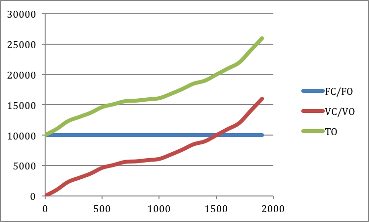

Kapitel 20 Excel omkostnings-eksempel
Her er et eksempel baseret på data leveret som punkter, dvs. ikke en funktion som i næste eksempel, man kan med fordel benytte excel som her.
Hvis en producent af karbon gedebukkestyr har leveret oplysninger om Q, FC, VC, kan man beregne de øvrige størrelser baseret på disse.
| Obs | Q/Mængde | FC/FO | VC/VO | TO | AFC/FE | AVC/VE | ATC/TE | MC/GROMK |
|---|---|---|---|---|---|---|---|---|
| 1 | 0 | 10000 | 0 | 10000 | ||||
| 2 | 100 | 10000 | 1000 | 11000 | 100,00 | 10,00 | 110,00 | 10,00 |
| 3 | 200 | 10000 | 2300 | 12300 | 50,00 | 11,50 | 61,50 | 13,00 |
| 4 | 300 | 10000 | 3000 | 13000 | 33,33 | 10,00 | 43,33 | 7,00 |
| 5 | 400 | 10000 | 3700 | 13700 | 25,00 | 9,25 | 34,25 | 7,00 |
| 6 | 500 | 10000 | 4633 | 14633 | 20,00 | 9,27 | 29,27 | 9,33 |
| 7 | 600 | 10000 | 5100 | 15100 | 16,67 | 8,50 | 25,17 | 4,67 |
| 8 | 700 | 10000 | 5600 | 15600 | 14,29 | 8,00 | 22,29 | 5,00 |
| 9 | 800 | 10000 | 5700 | 15700 | 12,50 | 7,13 | 19,63 | 1,00 |
| 10 | 900 | 10000 | 5900 | 15900 | 11,11 | 6,56 | 17,67 | 2,00 |
| 11 | 1000 | 10000 | 6100 | 16100 | 10,00 | 6,10 | 16,10 | 2,00 |
| 12 | 1100 | 10000 | 6800 | 16800 | 9,09 | 6,18 | 15,27 | 7,00 |
| 13 | 1200 | 10000 | 7600 | 17600 | 8,33 | 6,33 | 14,67 | 8,00 |
| 14 | 1300 | 10000 | 8500 | 18500 | 7,69 | 6,54 | 14,23 | 9,00 |
| 15 | 1400 | 10000 | 9000 | 19000 | 7,14 | 6,43 | 13,57 | 5,00 |
| 16 | 1500 | 10000 | 10000 | 20000 | 6,67 | 6,67 | 13,33 | 10,00 |
| 17 | 1600 | 10000 | 11000 | 21000 | 6,25 | 6,88 | 13,13 | 10,00 |
| 18 | 1700 | 10000 | 12000 | 22000 | 5,88 | 7,06 | 12,94 | 10,00 |
| 19 | 1800 | 10000 | 14000 | 24000 | 5,56 | 7,78 | 13,33 | 20,00 |
| 20 | 1900 | 10000 | 16000 | 26000 | 5,26 | 8,42 | 13,68 | 20,00 |
Når man skal tegne i excel, lyser man søjlen med x-værdier og y-værdier op (Husk x-værdi søjlen skal stå først. Flere y-værdi søjler giver flere grafer)
Charts fanen → scatterplot → Smooth Lined Scatter
Dette producerer nedenstående plots
